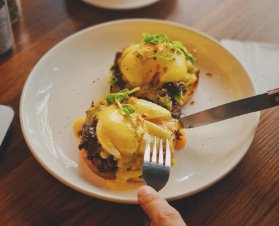

Eggs Benedict

A fancier way to make breakfast, Eggs Benedict is popular in America. Despite the fancy sounding ingredients, it is not particularly difficult to make if you have some experience. Note: final product may not match picture.
Preparing time: 20 minutes, cooking time: 4 minutes. Serves 4 people.
- 4 large eggs
- 4 slices of toast
- 12 slices of bacon
- Salad greens
- 2 large eggs
- 150 grams of butter
- 1 teaspoon of white vine vinegar
- 1 lemon
- Fill the boiling pot halfway with water and let it boil. Turn the heat down to minimum.
- Melt the butter in a separate pan and take it off the heat.
- Take a heat-resistant bowl, place the egg yolks there and place the bowl in the water-filled pot.
- Ensure that the water is boiling.
- Whisk the eggs and when it starts to thicken, add white vine vinegar.
- Slowly add the melted butter while whisking.
- Remove the sauce from the pot and add salt and pepper.
- Add some lemon juice and have a quick taste. Add more lemon juice until you're satisfied with the taste.
- Take a wide pot and fill it halfway with water.
- Add salt, 1 tablespoon of vinegar and let it boil. Afterwards, reduce the heat.
- Crack all four eggs into separate small bowls.
- Stir the water slowly and simultaneously add the yolks.
- Let it boil for 2-4 minutes, then take the yolks and place them onto cooking paper.
- Fry the bacon and toast the bread.
- Place the bacon, poached egg and hollandaise sauce on the toast.